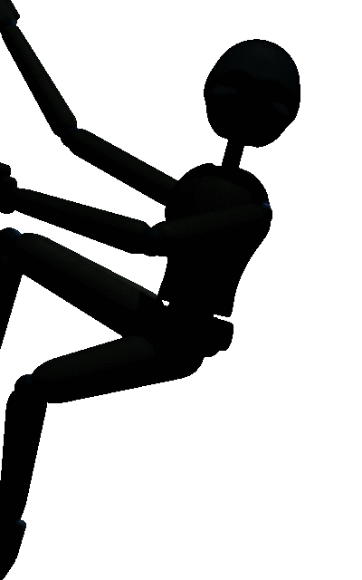
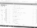
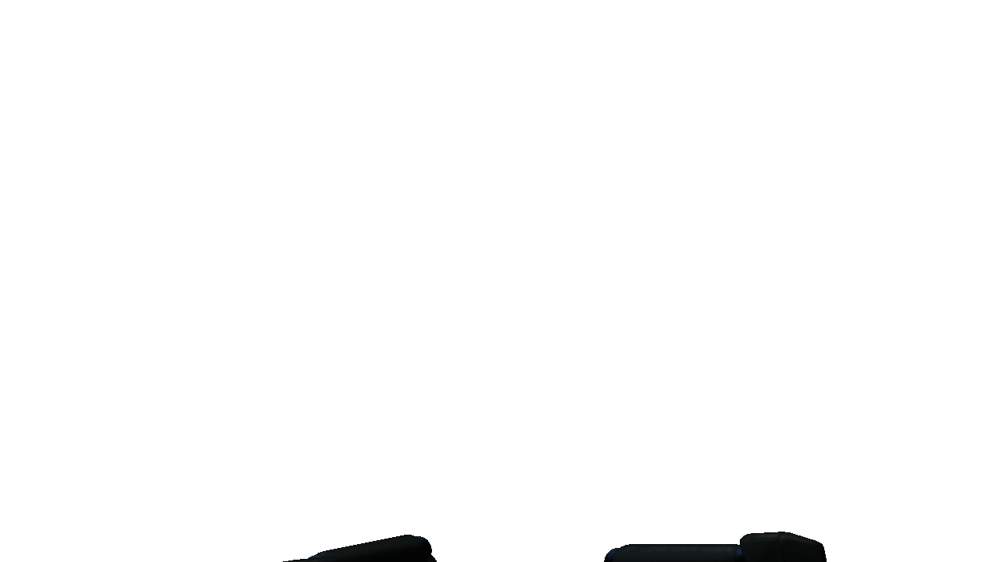
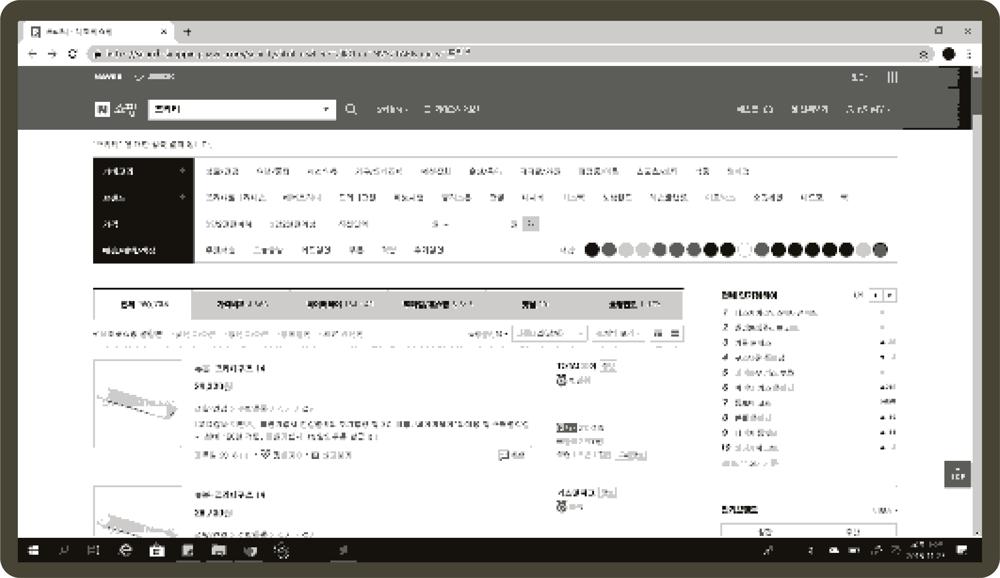
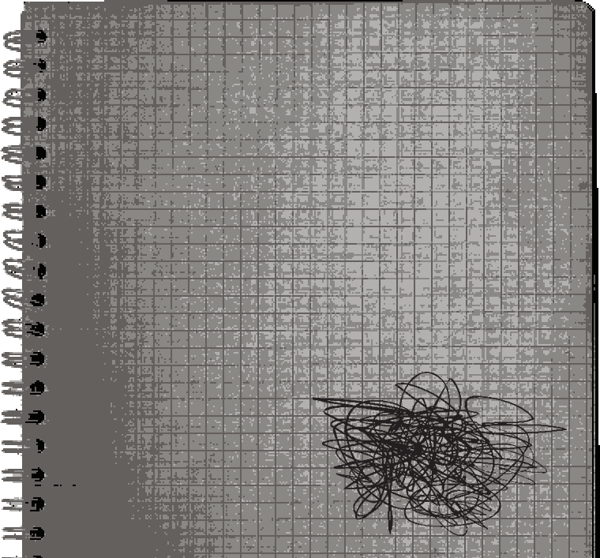
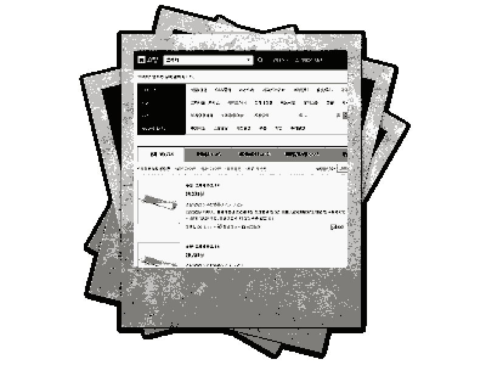

이게 뭐지...?
어두워서 잘 안보인다. 가까이 가볼까?
시끄러운 모니터소리가 난다.
▶예
▶아니오
홈데코 사이트에 "프리티"라고 검색한 흔적이 있다.
"프리티"..."Pretty"...? 굳이 한글로 영어를 적어놨다..
자꾸 헛것이 보이는 것 같은 느낌인걸...
"프리티"라는 검색어가 있었다.
굳이 영어를 안쓰고 한글로 적은
이유가 뭘까?
무엇을 사려고 했던 것일까....
#2 프리티









